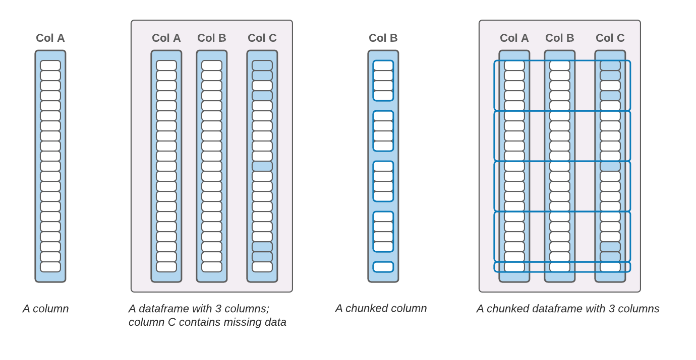

In the PyData ecosystem we have a large number of dataframe libraries as of today, each with their own strengths and weaknesses. Pandas is the most popular library today. Other libraries offer significant capabilities beyond what it provides though - impressive performance gains for Vaex (CPU) and cuDF (GPU), distributed dataframes for Modin and Dask, or leveraging Spark as an execution engine for Koalas. For downstream library authors, it would be powerful to be able to work with all these libraries. Which right now is quite difficult, and therefore in practice most library authors choose to focus only on Pandas.
The first step to improve this situation is to use a “data interchange protocol”, which will allow converting one type of dataframe into another, as well as inspect the dataframe for basic properties (“how many columns does it have?”, “what are the column names?”, “what are the dtypes for a given column?”) and convert only subsets of it.
We are happy to release a Request for Comments (RFC) today, containing both a design document with purpose, scope and requirements for such a dataframe interchange protocol, as well as a prototype design: documentation, repository.
We note that an interchange protocol is not a completely new idea: for arrays
we have had such protocols for a long time, e.g., __array_interface__, the
buffer protocol (PEP 3118), __cuda_array_interface__ and DLPack. The
conversation about a dataframe interchange protocol was started by Gael
Varoquaux last year in this Discourse
thread.
In response Wes McKinney sketched up an initial prototype
here. There were a lot
of good ideas in that initial conversation and prototype, however it was
clear that it was a complex enough topic that a more thorough approach
including collecting requirements and use cases from a large set of
stakeholders was needed. The RFC we’re announcing in this blog post is the
result of taking that approach, and hopefully will be the starting point for
implementations in all Python dataframe libraries.
We want to emphasize that this is not a full dataframe API; the only
attribute added to the dataframe class/object of a library will be
__dataframe__. It is aimed at library authors, not at end users.
What is a “dataframe” anyway?
Defining what a dataframe is turns out to be surprisingly difficult exercise. For example, can column named be integer or only strings, and must they be unique? Are row labels required, optional, or not a thing? Should there be any restriction on how data is stored inside a dataframe? Does it have other properties, like row-column symmetry, or support for certain operations?
For the purposes of data interchange, we need to describe a dataframe both conceptually, and in terms of data representation in memory so that another library can interpret that data. Furthermore, we want to impose as few extra constraints as possible. Here is our working definition: A dataframe is an ordered collection of columns, which are conceptually 1-D arrays with a dtype and missing data support. A column has a name, which is a unique string. A dataframe or a column may be “chunked”, meaning its data is not contiguous in memory.

For more on the conceptual model, and on requirements that a dataframe protocol must fulfill, see this design document.
Key design choices
Given the goals and requirements we had for the protocol, there were still a number of design choices to make. The single most important choice is: does the protocol offer a description of how data is laid out in memory, or does it offer a way (or multiple ways) of exporting data in a given format, e.g. a column as an Apache Arrow array or a NumPy array.
The choice we made here in the current
prototype is:
do not assume a particular implementation, describe memory down to the level of
buffers (=contiguous, 1-D blocks of memory). And at that buffer level, we can
make the connection between this dataframe protocol and the
array API standard via __dlpack__.
Similarity (and synergy?) with the Arrow C Data Interface
When looking at the requirements and native in-memory formats of all prominent dataframe libraries, we found that the Arrow C Data Interface is pretty close to meeting all the requirements. So a natural question is: can we use that interface, and standardize a Python API on top of it?
There are a couple of things in the current Arrow C Data Interface that didn’t quite match everyone’s needs. Most importantly, the Arrow C Data Interface does not have device support (e.g., GPUs). Other issues (or wishes) are:
- The “deleter”, which releases memory when it’s no longer needed, lives at the column level in Arrow. Multiple people expressed the desire for more granular control. It seems more natural and performant to have the deleter at the buffer level.
- Allowing a column to have its data split over different devices, e.g. part of the data lives on CPU and part on GPU (a necessity if the data doesn’t fit in GPU memory).
- Arrow supports masks, for null/missing values, as a bit mask. NumPy doesn’t
have bit masks, and boolean masks are normally one byte per value. This is
a smaller issue though, because it can be solved via a convention like
using (e.g.) a regular
int8column with a certain name.
Compared to the similaries between the two protocols, the differences are
relatively minor. And a lot of work has already gone into the Arrow C Data
Interface, hence we are interested in exploring if we can contribute the
identified improvements back to Apache Arrow. That would potentially let us
support, for example, an __arrow_column__ attribute at the column level in
Python, which would save dataframe libraries that already use Apache Arrow a
significant amount of implementation work.
A standard dataframe creation function
Also in the analogy to the array API standard, we are proposing a single new
function, from_dataframe, for dataframe libraries to add in their top-level
namespace. This function will know how to construct a library-native
dataframe instance from any other dataframe object. Here is an example for
Modin:
import modin.pandas as pd
def somefunc(df, ...):
"""
Do something interesting with dataframe `df`.
Parameters
----------
df : dataframe instance
Can be a Modin dataframe, or any other kind of dataframe supporting the `__dataframe__` protocol
"""
df_modin = pd.from_dataframe(df)
# From now on, use Modin dataframe internally
def somefunc2(df, col1, col2):
"""
Do something interesting with two columns from dataframe `df`.
Parameters
----------
df : dataframe instance
Can be a Modin dataframe, or any other kind of dataframe supporting the `__dataframe__` protocol
col1 : str
Name of column 1
col1 : str
Name of column 2
"""
# This will extract just the two columns we need from `df`, and put them in
# a Modin dataframe. This is much more efficient than converting the
# (potentially very large) complete dataframe.
df_modin = pd.from_dataframe(df, cols=[col1, col2])
Next steps
This protocol is not completely done. We are releasing it now in order to get feedback from a wider range of stakeholders. We are interested to hear about everything from potential use cases we missed or should describe better, to whether the API feels natural, and low-level performance/implementation concerns or ideas for improvement.
Today we are releasing one prototype implementation, for Pandas. Most of that prototype can be reused for implementations in other libraries. What we’d really like to see next is: can this be used in downstream libraries like scikit-learn or Seaborn? Right now those accept Pandas dataframes; letting them work with other types of dataframes is potentially quite valuable. This is what we should see before finalizing the API and semantics of this protocol.
What about a full dataframe API?
At the end of last year we released a full array API standard. So what about a full dataframe API?
Our initial intent was to take the methodology we used for constructing the array API, and the lessons we learned doing so, to dataframes. We found that to be quite challenging however, due to two reasons:
- It turns out that dataframe library authors & end users have quite different API design needs. Much more so than for arrays. Library authors need clear semantics, no surprises or performance cliffs, and explicit APIs. End users seem to want more “magic”, where API calls can be chained and basically “do the right thing”.
- For array libraries we used API synthesis, and based design decisions partly on data about how often current APIs are used. This worked because maintainers and end users are largely happy with the state of APIs for n-dimensional arrays. Those have an almost 25-year long history, so that’s not surprising. Dataframes are much younger - Pandas was created in 2009 and reached version 1.0 only last year. And much more is still in flux there. Hence freezing the current state of dataframe APIs via standardization did not seem like a good idea.
So, what’s next for a larger dataframe API? Our strategy will be to focus on library authors as an audience, and based on the introduction of the interchange protocol see if we can identify next pieces that are useful. And then organically grow the size of the API, while being careful to not standardize APIs that dataframe library maintainers are not completely satisfied with.